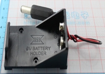

arduino物联网进小学课堂思路整理
#1 arduino物联网进小学课堂思路整理 作者：有志青年 发表时间：2013-10-4 10:26:15
arduino主控板+扩展版，这样所有的元器件就可以通过杜邦线直接连接，省去了面包板。
其余的元器件可以大体分为获取（传感器）和输出两大类：
传感器：声音传感器模块、大按键模块、 火焰传感器模块、光敏传感器模块、电位器
输出类：蜂鸣器模块、全彩LED模块、小马达+螺旋桨
工具类：万用表、杜邦线、9v电池盒、9v电池、鳄鱼夹、元件盒
可以考虑的教学内容：
1、认识arduino板和各模块
2、用SA4控制你的模块
3、点亮LED灯【大按键模块+LED模块】
4、交通信号灯【全彩LED灯】
5、调光小台灯【电位器+LED模块】
6、聪明小台灯【光敏传感器模块+LED模块，认识声音传感器模块】
7、自制小台灯【学生设计自己的小台灯】
8、火灾报警器【火焰传感器+蜂鸣器】
9、风扇转转转【小马达+螺旋桨】
10、自制小风扇【自己设计小风扇】
11、用ardublock控制arduino【区别在于可以写入主控板，脱离电脑运行】
11后可以重复以上八个内容
主控类：兼容板约计65元
arduino主控板 1块
传感器扩展版 1块
传感器模块部分：约计25元
声音传感器模块 1个
大按键模块 1个
火焰传感器模块 1个
光敏传感器模块 1个
电位器 1个
输出类： 约计10元
蜂鸣器模块 1个
全彩LED模块 1个
小马达+螺旋桨 1组
工具类： 约计70元

万用表（共1个）/杜邦线（3p线6根/4p线1根/公母线2根一组/9v电池盒9v电池（一套）鳄鱼夹（两根）
合计约170元（最低价，优选后价格接近200元）每班50学额，2人合一套，每校25套+5套备用，约计六千大洋。
［此帖子已被 有志青年 在 2013-10-4 11:01:37 编辑过］
#2 Re:arduino物联网进小学课堂思路整理 作者：黄药师 发表时间：2013-10-5 19:02:53
这又是什么东东？？
#3 Re:arduino物联网进小学课堂思路整理 作者：ntcqxx 发表时间：2013-10-24 15:18:46
感觉楼主思路好，花最少的钱，做最多的事情。